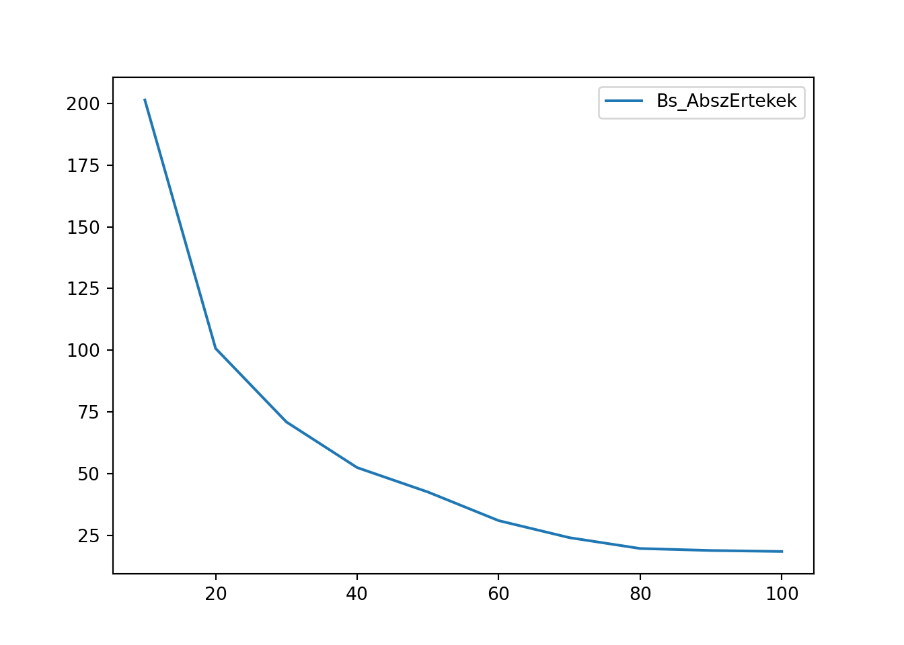
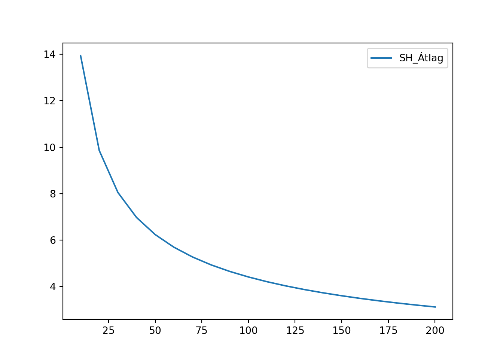

5 A becsléselmélet alapjai
5.1 Ismétlés: Balaton átúszás eredmények és ezek FAE mintái
Folytassuk ott a dolgainkat, ahol a 2. heti anyagban abbahagytuk. Töltsük be egy pandas data frame-be a LIDLBalaton2022.xlsx fájl adatait. Ebben az Excelben a 2022-es LIDL Balaton átúszás résztvevőinek neve, neme és percben mért időeredménye található. Ez az adatsor lesz most nekünk a sokaságunk.
# Elemzéshez és ábrázoláshoz szükséges csomagok betöltése
import numpy as np
import pandas as pd
import matplotlib.pyplot as plt
import scipy.stats as stats
# Adatbeolvasás data frame-be
Balcsi = pd.read_excel("LIDLBalaton2022.xlsx")
Balcsi.info()## <class 'pandas.core.frame.DataFrame'>
## RangeIndex: 9751 entries, 0 to 9750
## Data columns (total 3 columns):
## # Column Non-Null Count Dtype
## --- ------ -------------- -----
## 0 Nev 9751 non-null object
## 1 Nem 9751 non-null object
## 2 PERC 9751 non-null float64
## dtypes: float64(1), object(2)
## memory usage: 228.7+ KB## Nev Nem PERC
## 0 Aba Attila F 142.416667
## 1 Abaffy Károly F 197.883333
## 2 Abaffy Kornél F 197.983333
## 3 Abelovszki Hajnalka N 182.000000
## 4 Abért Valentin ifj F 222.516667Oké, meg is vagyunk! A sokságnak \(N=9751\) eleme van, tehát ennyi versenyző úszta át 2022-ben a Balatont. A sokaságnak alapvetően egy ismérvével, az időeredménnyel (PERC oszlop) fogunk foglalkozni, és ennek három statisztikai mutatóját vagy szebben fogalmazva statisztikai paraméterét fogjuk megvizsgálni:
- Az átlagos időt Jele: \(\bar{Y}\) vagy \(\mu\)
- Az egyéni idők szórását Jele: \(\sigma\)
- A 3 óra (180 perc) felett teljesítők arányát Jele: \(P\)
Ahogy a 4.3. fejezetben ezt tisztáztuk, egy teljes statisztikai adatsor, azaz sokaság statisztikai mutatóit/paramétereit együttesen \(\theta\)-val jelöljük.
Akkor hát számoljuk is ki ezeket a \(\theta\)-kat! Még kiszámoljuk az időeredmények varianciáját (szórásnégyzetét) is, mert erre is szükségünk lesz a későbbiekben.
SokasagiAtlag = np.mean(Balcsi.PERC)
SokasagiSzoras = np.std(Balcsi.PERC)
SokasagiVariancia = SokasagiSzoras**2
SokasagiArany = np.sum(Balcsi.PERC > 180)/len(Balcsi)
SokasagiAtlag## 167.52914060096398## 44.08833385551663## 0.3295046661880833Meg is vagyunk! Akkor következő lépésben vegyünk is egy \(n=100\) elemű FAE (tehát visszatevéses véletlen) mintát ebből a sokaságból egy \(1992\)-es véletlen mag mellett. Majd számoljuk is ki a három vizsgált statisztikai paraméter értékét a mintában.
## <class 'pandas.core.frame.DataFrame'>
## Index: 100 entries, 7991 to 5727
## Data columns (total 3 columns):
## # Column Non-Null Count Dtype
## --- ------ -------------- -----
## 0 Nev 100 non-null object
## 1 Nem 100 non-null object
## 2 PERC 100 non-null float64
## dtypes: float64(1), object(2)
## memory usage: 3.1+ KBMintaAtlag = np.mean(BalcsiMinta.PERC)
MintaSzoras = np.std(BalcsiMinta.PERC)
MintaArany = np.sum(BalcsiMinta.PERC > 180)/len(BalcsiMinta)
MintaAtlag## 164.44033333333334## 38.62827175499542## 0.3Ezek szerint összefoglalva statisztikai paramétereink mintából becsült értékei:
- \(\bar{y}=164.4\) perc
- \(s^* = 38.6\) perc
- \(p = 0.3=30\%\)
Szintén a 4.3. fejezetben szerepelt, hogy a statisztikai paraméterek mintából becsült értékeit együttesen \(\hat{\theta}\)-val jelöljük. A \(\hat{\theta}\)-ok speciális elnevezése: becslőfüggvény a valódi, sokasági \(\theta\)-hoz. Szóval, a mintaátlag (\(\bar{y}\)) a sokasági átlag \(\bar{Y}=\mu\) becslőfüggvénye, a mintából számolt szórás (\(s^*\)) a valós, sokasági szórás (\(\sigma\)) becslőfüggvénye és a mintából számított 3 órán túli úszók aránya (\(p\)), a sokasági arány (\(P\)) becslőfüggvénye.
A feladatunk pedig az lenne, hogy rájöjjünk: Hogyan tudunk egyetlen egy db \(n\) elemű minta \(\hat{\theta}\) becslőfüggvény értékeiből következtetni a teljes \(N\) elemű sokaság valós \(\theta\) paraméter értékeire? Ez a statisztikai becsléselmélet alapfeladata. Azt is körbejártuk a 4.3. fejezetben, hogy ha a mintavételünk tényleg rendes FAE mintavétel, akkor ami \(\hat{\theta}\) és a valós \(\theta\) között áll az nem más, mint a mintavételi hiba (MVH). A feladatunk tehát konkrétabban nézve az MVH kiszámítása vagy legalábbis valamilyen közelítése.
Ahhoz, hogy elinduljunk az MVH számítás rögös útján egy olyan trükkel élünk, ami kihasználja, hogy most éppen ismerjük a teljes Balatont átúszó sokaságot. Nyilván a gyakorlatban azért kell becsléselmélettel meg MVH számítással foglalkozni, mert a sokaságot nem tudjuk megismerni. :) De most mivel megvannak a sokasági adatok, így kivehetünk a sokasági időeredményekből nagyon-nagyon sok, mondjuk \(10000\) db \(n=100\) elemű mintát.
Ezt meg is tettük a 4.3. fejezet legvégén. Most csak visszatöltjük az eredményt tartalmazó Excel táblát egy data frame-be. Az Excel fájl, amit ebben a jegyzetben használok innen elérhető.
## Elem1 Elem2 Elem3 ... Elem98 Elem99 Elem100
## 0 164.800000 129.066667 156.166667 ... 207.350000 159.666667 165.883333
## 1 152.516667 212.483333 152.900000 ... 307.266667 119.783333 128.216667
## 2 145.666667 185.266667 169.516667 ... 167.733333 228.366667 215.633333
## 3 185.683333 120.333333 201.250000 ... 182.766667 177.666667 112.450000
## 4 117.483333 142.350000 320.266667 ... 188.566667 189.166667 99.916667
## ... ... ... ... ... ... ... ...
## 9995 162.333333 83.350000 146.750000 ... 164.250000 131.933333 128.183333
## 9996 100.416667 161.433333 187.366667 ... 160.483333 168.416667 209.300000
## 9997 146.450000 160.783333 165.483333 ... 158.816667 167.733333 183.400000
## 9998 139.250000 140.466667 130.933333 ... 153.616667 112.366667 196.050000
## 9999 147.316667 173.450000 106.100000 ... 185.616667 171.800000 135.166667
##
## [10000 rows x 100 columns]Oké, az eredményből látjuk is, hogy úgy néz ki a data frame, hogy 1 sor tartalmaz 1 db 100 elemű mintát és a mintaelemeket (tehát a mintába besorsolt versenyző percben mért időeredményét) az oszlopkban tároljuk.
Ez a tárolási forma azért is kényelmes, mert a data frame “szeletelésével” bármikor tudunk \(n<100\) elemű mintákat is előállítani. Hiszen a mintavétel a pitonkának köszönhetően teljesen véletlenszerű volt, így ha kiválasztom a tábla első \(20\) oszlopát az olyan, mintha lenne \(10000\) db \(n=20\) elemű mintám is!
Ezt most tegyük is akkor meg!
## Elem1 Elem2 Elem3 ... Elem18 Elem19 Elem20
## 0 164.800000 129.066667 156.166667 ... 136.066667 115.616667 174.966667
## 1 152.516667 212.483333 152.900000 ... 150.933333 172.316667 218.083333
## 2 145.666667 185.266667 169.516667 ... 140.300000 121.900000 195.650000
## 3 185.683333 120.333333 201.250000 ... 147.950000 264.466667 137.033333
## 4 117.483333 142.350000 320.266667 ... 150.500000 245.600000 178.166667
## ... ... ... ... ... ... ... ...
## 9995 162.333333 83.350000 146.750000 ... 178.166667 143.166667 146.433333
## 9996 100.416667 161.433333 187.366667 ... 139.366667 166.483333 129.966667
## 9997 146.450000 160.783333 165.483333 ... 113.033333 195.250000 167.200000
## 9998 139.250000 140.466667 130.933333 ... 182.200000 148.633333 121.183333
## 9999 147.316667 173.450000 106.100000 ... 217.333333 198.366667 166.133333
##
## [10000 rows x 20 columns]Szuper, olybá tűnik akkor jók vagyunk! :)
5.2 A torzítatlanság fogalma
Na hát akkor vizsgáljuk meg először a \(10000\) db \(n=100\) elemű mintát alaposabban ahhoz, hogy megértsük: hogyan is viselkednek a \(\hat{\theta}\) becslőfüggvények a valós \(\theta\) paraméterekhez képest.
Először számoljuk ki mindegyik \(100\) elemű mintában a három statisztikai mutatónk, azaz becslőfüggvényünk értékét: átlag, szórásnyégyzet (variancia) és a 180 percen felül teljesítők aránya. A szórás kapcsán kényelmesebb lesz a gyökjel nélkül vizsgálni a dolgokat, ezért veszünk varianciát.
Szerencsénkre, a numpy csomag statisztikai függvényei axis = 1 paraméter beállítással soronként és NEM oszloponként számolják ki az átlagot, varianciát, összegeket, így minden mintára ki tudjuk számolni a becslőfüggvények értékét 1-1 új oszlopban. Figyeljünk arra, hogy mivel a data frame oszlopai folyamatosan bővülnek, így manuálisan le kell szorítani a numpy statisztikai függvények alkalmazását mindig az első 100 oszlopra az iloc metódussal!
MintaVetelek100Elem['Atlagok'] = np.mean(MintaVetelek100Elem.iloc[:,0:100], axis=1)
MintaVetelek100Elem['Varianciak'] = np.std(MintaVetelek100Elem.iloc[:,0:100], axis=1)**2
MintaVetelek100Elem['Aranyok'] = np.sum(MintaVetelek100Elem.iloc[:,0:100] > 180, axis=1)/100
MintaVetelek100Elem## Elem1 Elem2 Elem3 ... Atlagok Varianciak Aranyok
## 0 164.800000 129.066667 156.166667 ... 171.261667 1779.537092 0.34
## 1 152.516667 212.483333 152.900000 ... 158.026500 1941.843989 0.29
## 2 145.666667 185.266667 169.516667 ... 172.278833 1987.792994 0.34
## 3 185.683333 120.333333 201.250000 ... 163.434167 2045.349935 0.33
## 4 117.483333 142.350000 320.266667 ... 166.552833 2077.951717 0.33
## ... ... ... ... ... ... ... ...
## 9995 162.333333 83.350000 146.750000 ... 163.682333 1687.185827 0.28
## 9996 100.416667 161.433333 187.366667 ... 164.332833 1748.105975 0.32
## 9997 146.450000 160.783333 165.483333 ... 163.702333 1425.601189 0.30
## 9998 139.250000 140.466667 130.933333 ... 166.423833 1564.257813 0.37
## 9999 147.316667 173.450000 106.100000 ... 173.050333 2302.607722 0.44
##
## [10000 rows x 103 columns]Oké, olybá tűnik, hogy mind a \(10000\) db mintára megvan mindhárom becslőfüggvény a MintaVetelek100Elem data frame utolsó három oszlopában.
Következő lépésként vegyük a mintaátlagos és a mintaarányok átlagát, és vessük össze az eredményeke a valós sokasági átlaggal és aránnyal!
AtlagokAtlaga = np.mean(MintaVetelek100Elem['Atlagok'])
AranyokAtlaga = np.mean(MintaVetelek100Elem['Aranyok'])
[AtlagokAtlaga, SokasagiAtlag]## [167.4932536, 167.52914060096398]## [0.329556, 0.3295046661880833]Hoppá, a kétféle értékek egészen közel vannak egymáshoz! Sőt, némi kerekítéssel a becslőfüggvények átlaga megegyezik az adott paraméter valós sokasági értékével!
## [167.5, 167.5]## [33.0, 33.0]Amit itt tapasztalunk az a TORZÍTATLANSÁG jelensége. Eszerint, ha az összes lehetséges mintából számolt \(\hat{\theta}\)-ok átlaga (vagy más szóval várható értéke) megegyezik a valós, sokasági \(\theta\) értékével, akkor a \(\hat{\theta}\) becslőfüggvény torzítatlan. A torzítatlanság esetünkben azért teljesül csak kerekítésekkel, mert mi csak \(10000\) db minta alapján vizsgálódunk, és nem vettük ki az összes lehetséges mintát, mivel azt valószínűleg nem bírta volna el a RAM-unk az \(N=9751\) elemű sokaság esetén. :)
A fenti fogalom matematikai formalizmussal az alábbi formát ölti. A képletben az \(E()\) függvény az átlagolás, azaz várható érték jele, ami az angolban ugyebár expected value álnéven fut … innen az E. :) \[E(\hat{\theta})=\theta\]
Ha a fenti egyenlőség teljesül az összes lehetséges tetszőleges \(n\) elemű mintában, akkor \(\hat{\theta}\) torzítatlan becslése \(\theta\)-nak.
Ebből kiindulva pedig megadhatjuk a torzítottság fokának (angolul Bias, rövidítve \(Bs\)) definícióját is, ami nem más, mint a becslőfüggvények (\(\hat{\theta}\)-ok) várható értékének különbsége a valós, sokasági \(\theta\) értéktől:\[Bs=E(\hat{\theta})-\theta\]
Láthatjuk, hogy \(10000\) db mintát vizsgálva az átlag és arány, mint \(\theta\) paraméterek esetében elég kicsi ez a \(Bs\). Mindkét esetben 1 tizedesre kerekítve \(0\) a torzítás.
## -0.0## 0.0Oké, a kis \(10000\) db \(n=100\) mintás kísérletünk alapján azt mondhatjuk, hogy a mintaátlag és mintaarány torzítatlan becslőfüggvényei a valós sokasági átlagnak és sokasági aránynak.
De mi a helyzet a szórás frontján? Konkrétan, első körben vizsgáljuk meg, hogy a mintákból számolt szórásnégyzetek torzítatlan becslései-e a sokasági szórásnégyzetnek, azaz varianciának!
## [1925.3877225365777, 1943.781182155494]## -18.4Jajj! Olybá tűnik, hogy a válasz NEM! A mintából számolt varianciák, azaz \({(s^*)}^2\)-ek átlaga a valós, sokasági varianciához képest esetünkben \(18.4\)-gyel alacsonyabb érték! Tehát, a mintavariancia, mint becslőfüggvény lefelé torzít a valós sokasági szóráshoz képest! Kellemetlen. Hiszen, ez azt jelenti, hogy egy mintából számolt variancia a valós soksági értékhez képest jó eséllyel kisebb lesz. Ez azért szerencsétlen, mert eszerint a vizsgált ismérvünk szóródásáról, indagozásáról egy mintából nézve a valósághoz képest jellemzően kisebb értéket látunk.
Tehát, pl. egy részvény árfolyamának szóródását (kockázat) az árfolyamadatok egy mintájából nézve a valósághoz képest jellemzően kisebbnek látjuk. A “kockázat” alulbecslése pedig egy olyan probléma, amivel kezdeni kell valamit!
A jelenség matematikailag az alábbi módon írható le: \[E\left({(s^*)}^2 \right) < \sigma^2\]
Azaz: \[Bs\left({(s^*)}^2\right) < 0\]
5.2.1 Az aszimptotikus torzítatlanság fogalma
Ami valamilyen szinten menti a helyzetet az az a tény, hogy bár a sokasági variancia alapból torzítottan becsülhető a mintavarianciákkal, de a becslés viszont aszimptotikusan torzítatlan. Ez azt jelenti, hogy mintaelemszám növelésével a torzítás mértéke (\(|Bs|\)) csökken, konkrétan \(0\)-ba tart. Azaz: \[\lim_{n \rightarrow \infty}{Bs\left({(s^*)}^2\right)}=0\]
Próbáljuk szemléltetni a jelenséget! A data frame-k 1. fejezet végén bemutatott oszlopkiválasztásával \(10000\) db \(n=\{10,20,30,...,90,100\}\) elemű minta esetén kiszámoljuk a mintavarianciák \(Bs({(s^*)}^2)\) értékét a valós sokasági varianciához (\(\sigma^2\)) képest.
Természetesen, technikailag ezt egy for ciklus segítségével tudjuk megoldani:
- A ciklus minden iterációjában kiválasztjuk a megfelelő elemszámú mintákat a
MintaVetelek100Elemdata frame-ből - Kiszámoljuk minden elemszám esetén \({(s^*)}^2\)-et mind a \(10000\) db mintára
- Kiszámoljuk és egy
list-ben eltároljuk \(Bs({(s^*)}^2)\), mint \(E({(s^*)}^2)\) és a valós, sokasági variancia, \(\sigma^2\) különbsége
# Üres lista létrehozása Bs-ek tárolására
Bs_Lista = []
# Vizsgált elemszámok listájának létrehozása
# 10 és 100 közötti egész számok felsoroltatása a 'range' függvényben 10-es lépésközzel
# Felső határ 101 a nyílt intervallum miatt
Elemszam_Lista = range(10, 101, 10)
# Ciklus indítása
for AktualisElemszam in Elemszam_Lista:
AktualisMintaVetelek = MintaVetelek100Elem.iloc[:, 0:AktualisElemszam].copy()
AktualisMintaVetelek['Varianciak'] = np.std(AktualisMintaVetelek, axis = 1)**2
AktualisVarianciakAtlaga = np.mean(AktualisMintaVetelek['Varianciak'])
AktualisBs = AktualisVarianciakAtlaga - SokasagiVariancia
Bs_Lista.append(round(AktualisBs, 1))
# Eredmény megtekintése
Bs_Lista## [-201.4, -100.7, -70.9, -52.4, -42.5, -30.9, -24.0, -19.6, -18.8, -18.4]Szépen láthatjuk, hogy a \(Bs\) értékek abszolút értéke az elég hatalmas \(201.4\)-től indulva szépen lefut az \(n=100\) esetben korábban is mért \(18.4\)-be. Az eredmények még látványosabbak egy vonaldiagramon ábrázolva.
# Vizsgált elemszámok és a mért Bs-ek data frame-be rendezése
# Ahol az elemszámok a sorindexek
BsData = pd.DataFrame(np.abs(Bs_Lista), columns=['Bs_AbszErtekek'], index = range(10, 101, 10))
# Ábrázolás a 'plot' metódussal: nem kell paraméterezni, mert csak egy oszlopunk van
BsData.plot()
plt.show()
Szépen, gyakorlatilag exponenciális ütemben csökken a \(Bs\) abszolút érték, bár a csökkenés nagysága \(n=90\)-ről \(n=100\)-ra már nem túl jelentős! Ez azt jelenti, hogy varianciák esetén a torzítás mértéke függ az \(n\) elemszámtól! Minél nagyobb az elemszám, annál kisebb a torzítás mértéke, tehát az \(|Bs|\).
5.3 A korrigált mintavariancia
A 2.1. fejezetben tapasztalt tényt, miszerint a mintavariancia \((s^*)^2\) a valós, sokasági \(\sigma^2\)-nek aszimptotikusan torzítatlan becslése fel lehet használni a variancia torzítási probléma megoldására.
Ugyebár azt tudjuk az szimptotikusan torzítatlanságból, hogy minél nagyobb az elemszám, annál kisebb a torzítás mértéke. Sőt, azt is meg lehet mondani, hogy a mintavarianciák várható értéke, \(E\left((s^*)^2\right)\) arányaiban \(\frac{n-1}{n}\)-nel tér el a sokasági varianciától, \(\sigma^2\)-től. Azaz igaz a következő egyenlőség: \[\frac{E\left((s^*)^2\right)}{\sigma^2}=\frac{n-1}{n}\]
Újrahasznosítva a \(Bs\)-ek meghatározására alkalmazott for ciklusos megoldásunkat, a fenti összefüggés helyessége is ellenőrizhető \(n=\{10,20,30,...,90,100\}\) elemszámok mesetén.
# Üres lista létrehozása a (várható érték) / (sokasági variancia) hányadosok tárolására
Hanyados_Lista = []
# Üres lista létrehozása az (n-1)/n hányadosok tárolására
ElemszamHanyados_Lista = []
# Vizsgált elemszámok listájának létrehozása
# 10 és 100 közötti egész számok felsoroltatása a 'range' függvényben 10-es lépésközzel
# Felső határ 101 a nyílt intervallum miatt
Elemszam_Lista = range(10, 101, 10)
# Ciklus indítása
for AktualisElemszam in Elemszam_Lista:
AktualisMintaVetelek = MintaVetelek100Elem.iloc[:, 0:AktualisElemszam].copy()
AktualisMintaVetelek['Varianciak'] = np.std(AktualisMintaVetelek, axis = 1)**2
AktualisVarianciakAtlaga = np.mean(AktualisMintaVetelek['Varianciak'])
Hanyados_Lista.append(round(AktualisVarianciakAtlaga/SokasagiVariancia, 3))
ElemszamHanyados_Lista.append(round((AktualisElemszam - 1)/AktualisElemszam, 3))
# Eredmények összefűzése data frame-be
Hanyados_df = pd.DataFrame(
list(zip(ElemszamHanyados_Lista, Hanyados_Lista)),
columns=['(n-1)/n', 'VarhatoErtek/SokasagiVar'])
Hanyados_df## (n-1)/n VarhatoErtek/SokasagiVar
## 0 0.900 0.896
## 1 0.950 0.948
## 2 0.967 0.964
## 3 0.975 0.973
## 4 0.980 0.978
## 5 0.983 0.984
## 6 0.986 0.988
## 7 0.988 0.990
## 8 0.989 0.990
## 9 0.990 0.991Szuper, aránylag szépen kijön a kétféle hányadosok közötti egyezőség! :) Persze itt is van némi eltérés, mivel csak \(10000\) db mintát vizsgálunk és nem az összes lehetségeset, de ez még így is látványos egyezés! Így már érthető, hogy a \(Bs\) abszolút értéke miért nem csökkent már látványosan \(n=90\)-ről \(n=100\)-ra: az \(\frac{n-1}{n}\) hányados mindkét esetben már elég kicsit volt, így a torzítás mértéke is!
Viszont, ha a \(\frac{E\left((s^*)^2\right)}{\sigma^2}=\frac{n-1}{n}\) egyenlőség igaz, akkor azt átrendezve a következő összefüggésre jutunk: \[\sigma^2=\frac{n}{n-1} \times E\left((s^*)^2\right)\]
Konstans szorzót egy átlagolás (\(E(...)\)) eredményén alkalmazni ugyan az, mintha minden kiátlagolandó elemet felszoroztam volna azzal a szorzóval. Tehát az \(\frac{n}{n-1}\) bevihető a várható érték függvényen belülre: \[\sigma^2= E\left(\frac{n}{n-1} \times (s^*)^2\right)\]
Mindezek alapján pedig azt mondjatjuk, hogy az \(s^2=\frac{n}{n-1} \times (s^*)^2\) módon KORRIGÁLT MINTAVARIANCIA már TORZÍTATLANUL becsli a valós sokasági varianciát, azaz \(\sigma^2\)-t! Hiszen \(\sigma^2= E\left(s^2\right)\).
Tyűha, ez nagyon szépen hangzik! :) Próbáljuk ki! Számoljuk ki a \(10000\) db \(n=100\) elemű mintában a korrigált mintavarianciákat, és nézzük meg azok átlagát (várható értékét)!
# Elemszám megadása külön változóban
n = 100
# Korrigált varianciák
MintaVetelek100Elem['KorrigaltVar'] = (n/(n-1)) * MintaVetelek100Elem['Varianciak']
# Torzítatlanság ellenőrzése
KorrVarAtlaga = np.mean(MintaVetelek100Elem['KorrigaltVar'])
[KorrVarAtlaga, SokasagiVariancia]## [1944.8360833702807, 1943.781182155494]## 1.1Győzelem! :) Ha nem is szűnt meg teljesen a dolog, de láthatóan nagyon alacsony, majdnem elhanyagolható lett a \(Bs\) mértéke! Sőt, már nem lefele torzítunk azzal a minimális \(1.1\)-gyel, hanem felfelé, ami egy szóródás becslésnél még a “jobbik eset”. Lásd a korábbi pénzügyi kockázat becslése példát. :) Ha lenne több mintánk, akkor a korrekció ki is nullázná a \(Bs\)-t.
Ezek alapján akkor jó lenne, ha lenne valami beépített függvényünk az std helyett, ami mintaadatok esetén alapból a KORRIGÁLT SZÓRÁS \(s = \sqrt{s^2}=\sqrt{\frac{n}{n-1} \times (s^*)^2}\) értékét számolja!
Nos, valójában az std tud korrigált szórást számolni egy extra paraméter segítségével. Ahhoz, hogy megértsük a paraméter működését egy picit végig kell gondolni a korrigált szórás képletének a működését.
Alapból a mintaadatok \(s^*\) szórását az alánbbi képlettel számoljuk: \[s^*=\sqrt{\frac{\sum_{i=1}^n{(y_i-\bar{y})^2}}{n}}\]
Azaz, megnézzük, hogy minden \(y_i\) mintaelem mennyivel tér el a minta \(\bar{y}\) átlagától, majd ezen eltéréseket négyzetre emelve összeadjuk és az összeget leosztjuk a minta \(n\) elemszámával, végül gyököt vonunk az egész hányadosból.
Ennek az értéknek a négyzete a sima, nem korrigált variancia: \[(s^*)^2=\frac{\sum_{i=1}^n{(y_i-\bar{y})^2}}{n}\]
Ha a fenrti variancia képletet beszorozzuk \(\frac{n}{n-1}\)-gyel akkor a következő egyszerűséítéseket tehetjük: \[s^2=\frac{n}{n-1} \times \frac{\sum_{i=1}^n{(y_i-\bar{y})^2}}{n} = \frac{\sum_{i=1}^n{(y_i-\bar{y})^2}}{n-1}\]
Tehát, a minta korrigált szórását úgy számoljuk ki mint a nem korrigáltat, csak a NEVEZŐBEN \(n-1\)-gyel osztunk, nem pedig \(n\)-nel: \[s=\sqrt{\frac{\sum_{i=1}^n{(y_i-\bar{y})^2}}{n-1}}\]
Ezt az eltérést a nevezőben a ddof = 1 paraméter beállítással jelezzuk a numpy csomag std függvényében. Könnyen kitalálható, hogy alapértelmezésben ddof = 0 beállítással fut az std függvény. :)
Lássuk is a dolgot akcióban!
# Korrigált varianciák 'std'-vel
MintaVetelek100Elem['KorrigaltVar_std'] = np.std(MintaVetelek100Elem.iloc[:,0:100], axis=1, ddof = 1)**2
# Torzítatlanság ellenőrzése
KorrVarAtlaga_std = np.mean(MintaVetelek100Elem['KorrigaltVar_std'])
[KorrVarAtlaga_std, SokasagiVariancia]## [1944.8360833702802, 1943.781182155494]## 1.1Királyság! Tökéletesen ugyan ott vagyunk, mint az előbb a manuális számolással! :)
Szépen szakszavakkal összefoglalva tehát az a fő tanulságunk, hogy
- A sima mintavariancia (\((s^*)^2\)) a sokasági variancia \(\sigma^2\) TORZÍTOTT becslőfüggvénye
- A korrigált mintavariancia (\(s^2\)) viszont a sokasági variancia \(\sigma^2\) TORZÍTATLAN becslőfüggvénye
5.4 A medián torzítatlansága
Stat. 1-en nagyon fontos mutatónk volt a medián, mint a vizsgált ismérv felezőpontja, hiszen nem volt érzékeny a kilógó értékekre az adatsorban, mint az átlag. Nézzük meg itt a Balaton átúszás 100 elemű mintáinak példáján, hogy ez a statisztikai paraméter torzítatlanul becsülhető-e!
# Sokasági medián átúszási idő
SokasagiMedian = np.median(Balcsi.PERC)
# Mintabeli mediánok kiszámítása
MintaVetelek100Elem['Medianok'] = np.median(MintaVetelek100Elem.iloc[:,0:100], axis=1)
# Mintabeli mediánok átlaga
MedianokAtlaga = np.mean(MintaVetelek100Elem['Medianok'])
# Torzítatlanság ellenőrzése
[MedianokAtlaga, SokasagiMedian]## [162.3393025, 162.26666666666668]## 0.1Olybá tűnik, hogy a medián a mintabeli mediánokkal torzítatlanul becsülhető A \(Bs(me) = E(me) - Me\) eltérés olyan minimális, hogy simán elhihető, hogy megszűnik, ha az összes lehetséges \(n=100\) lemeű mintát vizsgálnánk és nem csak \(10000\)-et.
5.5 A Standard Hiba (SH) fogalma
Szép és jó, hogy megállapítottuk, hogy a mintaátlag, mintaarány, korrigált mintavariancia és mintamedián torzítatlan becslőfüggvényei a nekik megfelelő sokasági \(\theta\) paramézereknek, de mire jó ez nekünk a gyakorlatban, amikor csak egyetlen egy darab mintavételünk van?
Hiszen, mint a 3-4. fejeuetekben tapasztaltuk, a torzítatlanság csak annyit mond, hogy ha van nagyon-nagyon sok mintavételünk, akkor a vizsgált statisztikai mutatónk/paraméterünk mintából számított értékei (becslőfüggvények) átlagosan eltalálják a mutató valós, sokasági értékét. De sajnos ebbe a definícióba nagyon sok minden belefér, és igazából önmagában a mintavételi hibáról (MVH) nem mond semmit.
Ezt a problémát nagyon jól érzékelteti a következő favicc.
“Egy mérnök, egy fizikus és egy statisztikus együtt mennek vaddisznóra vadászni. Alig tesznek meg néhány lépést az erdőben, máris észrevesznek 150 méterre egy hatalmas példányt.
A mérnök felemeli a puskáját, céloz és lő, de három méterrel mellétalál jobbra. A fizikus így okoskodik:
”Egy kis szellő fúj balról, ha kicsit balra célzok, akkor eltalálom.”
Ő is célbaveszi a szarvast, lő és három méterrel balra elvéti. A statisztikus felugrik, és örvendezni kezd:
“Megvan! Megvan! Eltaláltuk!”
Ugyebár kedvenc viccbéli statisztikus azért örvendez, mivel a három méterrel jobbra és balra hibázó két lövés átlagban pont telibe kapta szegény vaddisznónkat!
Na, hát erről szól a torzítatlanság is:
- Le akarunk vadászni lövésekkel, azaz mintavételekkel egy statisztikai paraméter sokasági értékét, \(\theta\)-t.
- Az első lövés, az 1. mintavételből származó becslőfüggvényünk értéke \(\hat{\theta}_1\)
- A második lövés, a 2. mintavételből származó becslőfüggvényünk értéke \(\hat{\theta}_2\)
- Ezek átlagban, azaz várható értékben eltallálják a keresett valós értéket, \(\theta\)-t: \(E(\hat{\theta})=\theta\)
- Íme: ez a torzítatlan becslés definíciója :)
Az statisztikai “\(\hat{\theta}\)”-os vadászat és a vaddisznó vadász közti analógia az alábbi ábrán szemléltethető. FONTOS :)
A fenti ábrán bejelöltem zölddel egy tetszőleges \(\hat{\theta}_i\) és a valós, sokasági \(\theta\) közti távolságot. Valójában ez az a távolság, amire kíváncsiak vagyunk egy tetszőleges FAE mintából számolt becslés és a keresett mutató sokasági értéke közötti távolság! Hiszen a gyakorlatban csak egy db mintavételünk van, és az egyetlen egy megfigyelt mintából kimókolt \(\hat{\theta}\) és \(\theta\) közti távolságot kéne kiszámolni! Ez lenne ugyebár a MVH, amit kersünk!
Nos, a torzítatlanságnak hála van egy módszer, amivel ezt a távolságot ki lehet számolni! Hiszen, ha a torzítatlanság miatt \(E(\hat{\theta})=\theta\), akkor ez azt jelenti, hogy a sok-sok mintából számolt \(\hat{\theta}_i\) értékek szórása épp a keresett zöld távolság. Hiszen mi is a szórás általános értelmezése? Egy véletlenszerűen kiválasztott elem az adatsorból várhatóan mennyivel tér el az átlagtól. Hogyan fordul ez le a \(\hat{\theta}\)-ok adatsorára? Ha a sok-sok lehetséges mintavételből kiválasztok egyet, akkor a kiválasztott mintából számolt \(\hat{\theta}\) várhatóan szórásnyival tér el a \(\hat{\theta}\)-ok átlagától, azaz a torzítatlanság miatt épp a valós, sokasági \(\theta\) értékétől.
Ebből az okfejtésből kiindulva a\(\hat{\theta}\)-ok szórását standard mintavételi hibának, röviden csak standard hibának, “SH”-nak nevezzük.
Akkor ezen felbuzdulva számoltassuk ki pitonkával az átlag és arány standard hibáit, mint a \(\hat{\theta}\)-ként funkcionáló mintaátlagok és minatarányok szórása! Itt sima szórást kell stámolni, semmi korrekció nem kell az std függvényben.
SH_Atlag = np.std(MintaVetelek100Elem.Atlagok)
SH_Arany = np.std(MintaVetelek100Elem.Aranyok)
SH_Atlag## 4.402018186841923## 0.04667871960540553Mivel az átlag és arány torzítatlan becslések, így a szórásként kiszámolt standard hibát a következőképpen lehet értelmezni:
- 100 elemű minták esetén egy konkrét mintaátlag várhatóan \(4.4\) perccel tér el az átlagok átlagától, azaz a valós, sokasági átlagos átúszási időtől.
- Egy konkrét 100 elemű mintában a Balatont 3 órán túl átúszók aránya várhatóan \(4.67\) százalékponttal tér el a teljes sokaság hasonló arányától.
Hasonlóan működik a dolog ezen a szinten a varianciákra és mediánokra is. HF kiszámolni és értelmezni az eredményeket. :)
Viszont, olybá tűnik, hogy nem vagyunk sokkal előrébb. Mivel, bár a standard hiba megadja, hogy egy mintából számolt becslés várhatóan mennyivel tér el a valóságtól, de a standard hiba (SH) kiszámolásához sok-sok mintavételre van szükség, hiszen ezekből a mintákból számolt \(\hat{\theta}\)-k szórásaként tudjuk az SH értéket megahtározni!
Az kéne, hogy az SH-t egyetlen egy mintavételből is valahogy ki tudjuk számolni!
Erre az átlag és az arány esetében van megoldásunk. Ugyanis e két mutató esetében a SH kifejezhető zárt formulával is:
- \(SH(\bar{y})=\frac{\sigma}{\sqrt{n}}\)
- \(SH(p)=\sqrt{\frac{P(1-P)}{n}}\)
Tehát, a két standard hiba a sokasági szórás (\(\sigma\)) és a keresett sokasági arány (\(P\)) és a mintaelemszám \(n\) ismeretében megahtározahtó. Próbáljuk is ki a dolgot.
n = 100
SH_Atlag_Formula = SokasagiSzoras / np.sqrt(n)
SH_Arany_Formula = np.sqrt((SokasagiArany * (1-SokasagiArany))/n)
[SH_Atlag, SH_Atlag_Formula]## [4.402018186841923, 4.408833385551663]## [0.04667871960540553, 0.04700333404646558]Olybá tűnik, hogy nagyjából egyezik a két érték. :) A minimális eltérés megint abbók fakad, hogy nem az összes lehetséges mintát vizsgáltuk, csak \(10000\) db-ot, amikor a \(SH\)-kat a \(\hat{\theta}\)-ok szórásaként számoltuk ki.
Viszont, itt megint az a probléma, hogy a \(SH\) kiszámításhoz olyan dolgokat kell ismerni, amiket egyetlen egy mintavétel esetén nem ismerünk: sokasági szórás (\(\sigma\)) és a sokasági arány (\(P\)).
NODE! Ezeket az ismeretlenek legalább tudjuk helyettesíteni az egy mintavételből számolt torzítatlan becslésükkel: a \(P\)-t helyettesítjük \(p\)-vel, a \(\sigma\)-t pedig a korrigált szórással, \(s\)-el (hiszen egy torzítatlan becslése kell).
Ennyi ismerettel pedig akkor pl. az \(5.\) mintánk alapján a \(SH(\bar{y}) \approx \frac{s}{\sqrt{n}}\) és \(SH(p) \approx \sqrt{\frac{p(1-p)}{n}}\) közelítő képletekkel meg tudjuk már határozni a \(SH\)-kat.
n = 100
SH_Atlag_ÖtödikMinta = np.sqrt(MintaVetelek100Elem.Varianciak[4] / n)
SH_Arany_ÖtödikMinta = np.sqrt((MintaVetelek100Elem.Aranyok[4] * (1-MintaVetelek100Elem.Aranyok[4]))/n)
SH_Atlag_ÖtödikMinta## 4.558455568470775## 0.04702127178203499Nem tűpontos a \(SH\) közelítése, de azért nagyságrendileg látszik, hogy jó nyomon járunk már egy mintavétel alapján is! :)
Sajnos hasonló közelítő képleteink a varianciák més mediánok esetén NINCSENEK. Ott majd más trükkökkel próbáljuk kiszámolni az \(SH\)-kat egy mintavétel alapján. De erről majd pár anyaggal később. :)
Most még egy fontos elnevezés: a \(SH^2\)-et gyakran nevezi a szaknyelv a becslőfüggvény VARIANCIÁJÁNAK. Én nem szeretem ezt az elnevezést, mert könnyű összekeverni a minta vagy éppen a sokasági adatok varianciájával, de sok helyen használják ezt az elnevezést, így fontos tudni! Tehát, ha valahol olyat olvastok, hogy a mintaátlagok varianciája ennnyi vagy a mintaarányok varianciája amannyi, akkor ott a költő az adott mutatók \(SH^2\)-re gonfolt. Jelölni pedig az elnevezés alapján logikus módon így szokás a dolgot: \(SH^2(\hat{\theta})=Var(\hat{\theta})\)
Ennek kapcsán talán fontos megemlékezni összefoglalásként arról, hogy itt a becsléselméletben milyen különböző szórásokkal, illetve varianciákkal találkoztunk:
- Sokasági szórás: A sokaság elemeinek várható eltérése a sokaság átlagától. Jele: \(\sigma\).
- Négyzete: sokasági variancia, \(\sigma^2\)
- Korrigálatlan mintaszórás: Egy db minta elemeinek várható eltérése az egy db mintánk átlagától. Jele: \(\sigma^*\)
- Négyzete: korrigálatlan mintavariancia, \((s^*)^2\)
- Korrigált mintaszórás: Ugyan az, mint a korigálatlan mintaszórás, csak torzítatlan becslést ad a valós, sokasági szóródásra. Jele: \(s\)
- Négyzete: korrigált mintavariancia, \(s^2\)
- Standard hiba: Sok-sok mintából számolt becslőfüggvény, azaz \(\hat{\theta}\) szórása. Torzítatlanság esetén egy konkrét mintából számolt becslőfüggvény eltérése a vizsgált \(\theta\) paraméter valós, sokasági értékétől. Jele: \(SH(\hat{\theta})\)
- Négyzete: becslőfüggvény varianciája, \(Var(\hat{\theta})\)
5.5.1 A konzisztens becslés fogalma
A standard hibáik formulájából az is kikövetkeztethető a mintaátlag és mintaarány becslőfüggvények esetében, hogy ezek konzisztens becslések is a valós sokasági átlagra, arányra.
Ugyanis, általánosságban egy \(\hat{\theta}\) becslőfüggvény akkor konzisztens, ha \(SH\)-ja, a mintaelemszám (\(n\)) növelésével \(0\)-ba tart:\[\lim_{n \rightarrow \infty}{SH(\hat{\theta})} = 0\]
Azaz, a egyre nagyobb a mintaméret, akkor a vizsgált statisztikai mutatónk egy mintából számított értéke (\(\hat{\theta}\)) egyre közelebb lesz a mutató valós, sokasági értékéhez (\(\theta\)).
Könnyen látható, hogy mintaelemszám (\(n\)) függvényében, mind a mintaátlagok, mind a mintaarányok standard hibái \(f(n) \sim \frac{1}{n}\) stílusú hiperbola függvények, amik a végtelenbe tartó \(n\) nevező esetén \(0\)-ba tartanak:\[\lim_{n \rightarrow \infty}{SH(\bar{y})} = \lim_{n \rightarrow \infty}{\frac{\sigma}{\sqrt{n}}} = 0\]
és \[lim_{n \rightarrow \infty}{SH(p)} = \lim_{n \rightarrow \infty}{\sqrt{\frac{P(1-P)}{n}}} = 0\]
Rajzoljuk is ki a standard hiba függvényt mondjuk \(SH(\bar{y})\) esetében \(n=\{10,20,...,200\}\) elemszámok mellett, és látni fogjuk a hiperbola alakot. Bár a dolog nem teljesen tiszta, mert a \(0\)-ba tartás sebesség a képlet alapján “gyökös”. :) Az ábrázolást végző Python kód logikája teljesen egyezik azzal, amit a 2.1. fejezetben is használtunk.
# Üres lista létrehozása a különböző elemszámok mellett vett SH-k tárolására
SH_Lista = []
# Vizsgált elemszámok listájának létrehozása
# 10 és 200 közötti egész számok felsoroltatása a 'range' függvényben 10-es lépésközzel
# Felső határ 201 a nyílt intervallum miatt
Elemszam_Lista = range(10, 201, 10)
# Ciklus indítása SH-k számításához
for AktualisElemszam in Elemszam_Lista:
SH_Lista.append(round(SokasagiSzoras / np.sqrt(AktualisElemszam), 3))
# Vizsgált elemszámok és a mért SH-k data frame-be rendezése
# Ahol az elemszámok a sorindexek
SHData = pd.DataFrame(SH_Lista, columns=['SH_Átlag'], index = range(10, 201, 10))
# Ábrázolás a 'plot' metódussal: nem kell paraméterezni, mert csak egy oszlopunk van
SHData.plot()
plt.show()
5.6 Az átlagos négyzetes hiba (MSE) fogalma
Ugyebár arra jutottunk, hogy egy statisztikai paraméter becslőfüggvénynek a szórása, mint standard hiba, csak akkor adja meg egy konkrét mintából számolt \(\hat{\theta}\) várható eltérését a valós, sokasági \(\theta\) értéktől, ha a becslőfüggvény torzítatlan, mert ekkor egyezik meg \(\theta\) a sok-sok mintából számolt \(\hat{\theta}\)-ok átlagával, \(E(\hat{\theta})\)-val.
Ha nem torzítatlan becslőfüggvényről beszélünk, akkor manuálisan ki tudjuk számolni a sok-sok mintából megadott \(\hat{\theta}\)-ok várható eltérését a valós, sokasági \(\theta\)-tól. Ez a mutató lesz a \(\hat{\theta}\) átlagos négyzetes hibája, angolul Mean Squared Error = MSE. A számoláshoz simán a klasszikus variancia képletet kell alkalmazni a kövtekező módon: \[MSE(\hat{\theta})=\frac{\sum_{i=1}^K{(\hat{\theta}_i-\theta)^2}}{K}\]
A képletben \(K\) a mintavételek száma (nekünk most \(10000\)) \(\hat{\theta}_i\) egyszerűen az \(i\)-edik mintából számolt \(\hat{\theta}\) értéke.
Számoljuk is ki az \(MSE\)-t, az egyetlen torzított becslőfüggvényre, a korrigálatlan mintavarianciára! A képletnél muszáj Pythonban a sum függvényt alkalmazni, és “manuálisan” lekódolni a formulát, mivel a beépített std függvénnyel \(\theta\) helyett \(E(\hat{\theta})\)-hoz viszonyítanánk, és a torzítottság miatt e két érték nem esik most egybe!
MSE_Varianciak = np.sum((MintaVetelek100Elem.Varianciak - SokasagiVariancia)**2)/10000
MSE_Varianciak## 163460.24046057483Királyság! Namármost. Ez a \(MSE\) érték valójában a becslés kétféje hibájának négyzetes összege. Konkrétan \[MSE=SH^2+Bs^2\]
Ugyebár itt egy \(\hat{\theta}\) becslőfüggvény eltérését a valós \(\theta\)-tól két lépcsőben lehet megközelíteni:
- \(SH\): Mennyivel tér el egy konkrét minta \(\hat{\theta}\)-ja a becslések átlagától, \(E(\hat{\theta})\)-től.
- \(Bs\): Mennyivel tér el a becslések átlaga a valós \(\theta\)-tól: \(Bs = E(\hat{\theta}) - \theta\)
És ha kiszámoljuk a gyakorlatban, akkor látjuk, hogy az E\(MSE\) tényleg ennek a fenti kétféle hibának az összege.
Bs_Varianciak = np.mean(MintaVetelek100Elem.Varianciak) - SokasagiVariancia
SH_Varianciak = np.std(MintaVetelek100Elem.Varianciak)
MSE_Varianciak_Összeggel = Bs_Varianciak**2 + SH_Varianciak**2
[MSE_Varianciak, MSE_Varianciak_Összeggel]## [163460.24046057483, 163460.2404605743]Jé, tényleg jó az összeges logikánk is! :)
Természetesen, ahol torzítatlan a becslés, ott a \(Bs=0\) miatt az \(MSE = SH^2\) azonosság áll. Vegyük pl. a mintaarányok esetét.
MSE_Aranyok = np.sum((MintaVetelek100Elem.Aranyok - SokasagiArany)**2)/10000
SH_Aranyok = np.std(MintaVetelek100Elem.Aranyok)
[MSE_Aranyok, SH_Aranyok**2]## [0.0021789054991602453, 0.0021789028640000706]ExcellenT! :)
5.6.1 Különböző becslőfüggvények összehasonlítása
Az \(MSE\)-t kiválóan lehet hasznosítani, mint egy olyan mérőszámot, amivel választani tudunk egy \(\theta\) sokasági paraméterre adott több lehetséges \(\hat{\theta}\) becslőfüggvény alternatíva közül. Kiváló példa erre az \((s^*)^2\) és \(s^2\), mint két alternatív becslőfüggény a sokasági variancia, \(\sigma^2\) becslésére.
Mondhatnánk erre a kérdésre válaszként csípőből azt, hogy “de hát a torzítatlan becslőfüggvény biztos jobb”. Nos nem feltétlenül. Mert mi van ha egy torzított becslés standard hibája annyival kisebb a torzítatlannál, hogy az ellensúlyozza a torzítás mértékét, és a végén egy “lövés” (azaz \(\hat{\theta}\) becslés) a torzított becslőfüggvényből közelebb esik a valós \(\theta\)-hoz, mint a torzítatlan becslésből származó “lövés”.
Ezt nagyon jól lehet érzékeltetni az 5. fejezet vaddisznó vadászatos példáján egy másik nézőpontból: mi van ha a torzítatlan becslésnek akkor a standard hibája, hogy egy konkrét “lövés” (azaz \(\hat{\theta}\) becslés) jóval messzebb lesz a valós \(\theta\)-tól, mint egy torzított becslőfüggvényből származó becslés?
Az ábrán látható, hogy egy enyhén “balra” torzított becslőfüggvényből származó, de kis standard hibájú \(\hat{\theta}_i\) becslések még eltalálják a vaddisznót, de a torzítatlan becslések, bár sok-sok mintavétel átlagában nagyon jól működnek, de egy konkrét \(\hat{\theta}_i\) lövésnek akkora a standard hibája, hogy nagyon messzire elvéti azt a vaddisznót!
Tehát a fenti jelenség miatt, ha egy adott \(\theta\)-ra több becslőfüggvény közül kell választanunk, akkor azt az \(MSE\) alapján szabad csak megtennünk, mert az egyszerre veszi figyelembe a torzítás mértékét és a standard hibát is.
Lássuk a dolgot a gyakorlatban: Mi a jobb becslés a sokasági varianciára? A korrigált vagy a korrigálatlan mintavariancia?
# Torzított becslés = Korrigálatlan mintavar.
Bs_Varianciak = np.mean(MintaVetelek100Elem.Varianciak) - SokasagiVariancia
SH_Varianciak = np.std(MintaVetelek100Elem.Varianciak)
MSE_Varianciak = Bs_Varianciak**2 + SH_Varianciak**2
# Torzítatlan becslés = Korrigált mintavar.
SH_KorrVarianciak = np.std(MintaVetelek100Elem.KorrigaltVar)
MSE_KorrVarianciak = 0 + SH_KorrVarianciak**2
[MSE_Varianciak, MSE_KorrVarianciak]## [163460.2404605743, 166433.95684503784]Hoppá, olybá tűnik, hogy \(MSE((s^*)^2) < MSE(s^2)\), tehát a nem korrigált mintavariancia van közelebb a valós, sokasági \(\sigma^2\)-hez egy “átlagos” mintavétel esetén, hanem a sima korrigálatlan verzió.
Ugyanakkor az adatsor bizonytalanságának, szóródásának “rendszeres” alábecslése a legtöbb esetben nagyobb probléma, mint a némileg magasabb standard hiba. Tehát, bár összességében, azaz \(MSE\)-ben az \((s^*)^2\) mintavételi hibája kisebb, mint \(s^2\)-nek, de a kisebb hiba iránya “lefelé” van a torzítás miatt, és ezt nem szeretjük itt most. Inkább bevállalunk egy valamivel nagyobb, de “szimmetrikus” hibát.
Így variancia esetében felülírjuk az \(MSE\) döntését, és a korrigált mintavarianciát használjuk a legtöbb esetben. Vagy másképpen fogalmazva azt mondhatjuk, hogy variancia esetén nagyobb súlyt helyezünk \(MSE\)-ben a \(Bs^2\)-re, mint a \(SH^2\)-re, és nem egyenlő mértékben preferáljuk a csökkenésüket.
Pl. az átlag standard hibájának \(\frac{s}{\sqrt{n}}\) elvű közekítésénél ez azért is jogos, mert a korrigálatlan mintaszórás használata esetén egy mintaátlag távolságát a valós, sokasági átlagtól az “átlagos mintavételben” alábecsülnénk, ami azért kellemetlen. :)
Ha két torzítatlan becslőfüggvény közül kell választanunk, akkor simán választhatjuk azt, aminek a standard hibája kisebb, hiszen ilyenkor ez egyben azt is jelenti, hogy az \(MSE\)-je is kisebb, mivel \(Bs^2=0\). Ezt hívják úgy is a szakirodalomban, mint a hatásosság kritériuma: Két becslőfüggvény közül az a hatásosabb, amelynek \(SH\)-ja kisebb. :)